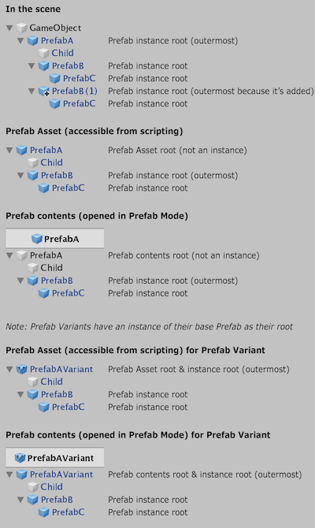

PrefabUtility.IsAnyPrefabInstanceRoot
Parameters
| gameObject | The GameObject to check. |
Returns
bool True if the GameObject is the root GameObject of any Prefab instance.
Description 描述
Is the GameObject the root of any Prefab instance?
Returns true if the GameObject is the root GameObject of a Prefab instance or the root GameObject of a nested Prefab.
This also returns true for a root GameObject of a nested Prefab instance inside a Prefab Asset.
The method return false for the root GameObject of a Prefab Asset itself, except if it’s a Prefab Variant, in which case it returns true.

Overview of which objects are Prefab instance roots.
See Also: IsOutermostPrefabInstanceRoot.